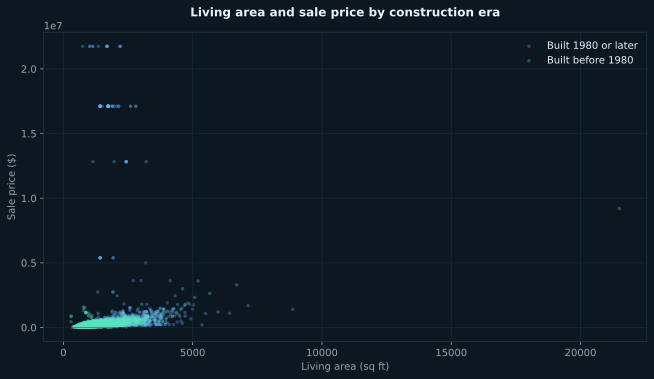
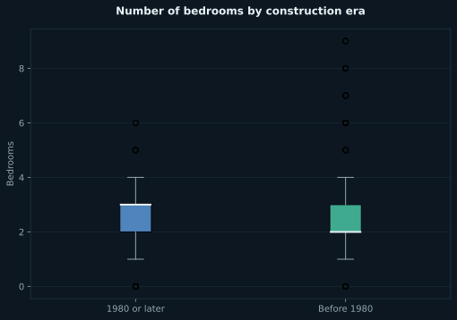
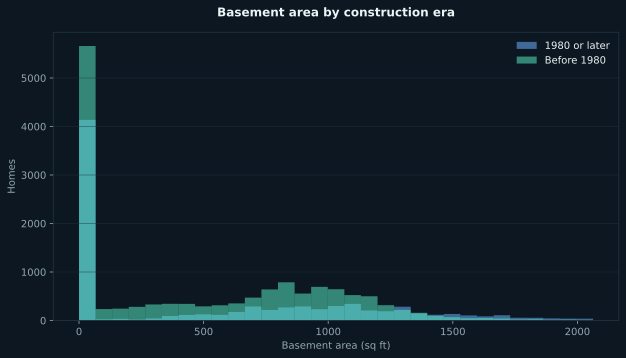
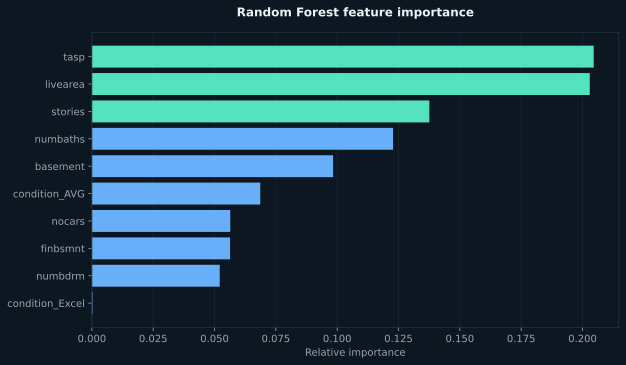
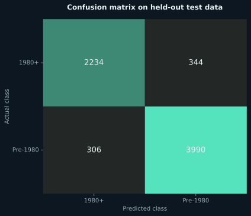

Model performance
90.5% accuracyThe classifier correctly labeled more than nine out of ten homes in the held-out test set.
92.1% precisionPositive predictions for pre-1980 homes were reliable.
92.9% recallThe model captured most of the actual pre-1980 homes in the test data.
Executed visuals from the original QMD
The model was retrained from the project code using 22,913 housing records and the original 70/30 train-test split.




Additional model validation
This confusion matrix is an additional diagnostic generated from the same trained model and held-out test data. It supplements—rather than replaces—the original analysis.

Method
Selected ten structural, capacity, value, and condition features; created a stratified 70/30 split; trained a 100-tree Random Forest; and evaluated accuracy, precision, recall, confusion matrix, and feature importance on unseen test records.
Original source
The complete project source is preserved below so reviewers can inspect the transformations, model logic, and visualization code.
View complete Python / Quarto source
---
title: "Baseball Field ML"
author: "Kevin Murray"
format:
html:
self-contained: true
page-layout: full
title-block-banner: true
toc: true
toc-depth: 3
toc-location: body
number-sections: false
html-math-method: katex
code-fold: true
code-summary: "Show the code"
code-overflow: wrap
code-copy: hover
code-tools:
source: false
toggle: true
caption: See code
execute:
warning: false
---
```{python}
#| label: libraries
#| include: false
import pandas as pd
import numpy as np
import plotly.express as px
from sklearn.ensemble import GradientBoostingClassifier
from sklearn import metrics
from sklearn.model_selection import train_test_split
from sklearn import tree
from sklearn.naive_bayes import GaussianNB
from sklearn.ensemble import RandomForestClassifier
from sklearn.metrics import accuracy_score
```
### Elevator Pitch
The Random Forest model excels at predicting whether a house was built before or after 1980, achieving a high level of accuracy. The most influential features in training the model were `tasp`, `livearea`, `stories`, and `numbaths`. These features provided strong signals for differentiating homes based on their construction periods. In contrast, the Gaussian Naive Bayes model, while simpler, achieved moderate accuracy at about 80%. This analysis highlights the power of ensemble methods like Random Forest in capturing complex patterns.
---
```{python}
#| label: project-data
#| code-summary: read and format project data
dwellings_data = pd.read_csv("https://raw.githubusercontent.com/byuidatascience/data4dwellings/master/data-raw/dwellings_ml/dwellings_ml.csv")
```
### Chart 1: Living Area vs. Sale Price
This scatter plot reveals a potential relationship between the living area and the sale price of homes, with homes built before and after 1980 distinguished by color. It suggests that older homes may show distinct trends in size and pricing compared to newer ones, providing the model with key differentiators for classification.
```{python}
import plotly.express as px
chart1 = px.scatter(dwellings_data, x='livearea', y='sprice', color='before1980',
title='Living Area vs. Sale Price',
labels={'livearea': 'Living Area (sq ft)', 'sprice': 'Sale Price ($)', 'before1980': 'Built Before 1980'})
chart1.show()
```
### Chart 2: Number of Bedrooms vs. Built Before 1980
The box plot highlights differences in the distribution of bedroom counts for homes built before and after 1980. Notable differences in medians or variability could signal that bedroom count is a valuable feature for determining construction periods.
```{python}
chart2 = px.box(dwellings_data, x='before1980', y='numbdrm',
title='Number of Bedrooms vs. Built Before 1980',
labels={'before1980': 'Built Before 1980', 'numbdrm': 'Number of Bedrooms'})
chart2.show()
```
### Chart 3: Total Basement Area by Built Before 1980
The histogram reveals the distribution of basement areas for homes built in different eras. Clear distinctions in the distributions suggest that basement area can be an effective predictor, helping the model distinguish between homes from these two construction periods.
```{python}
chart3 = px.histogram(dwellings_data, x='basement', color='before1980', barmode='overlay',
title='Total Basement Area by Built Before 1980',
labels={'basement': 'Total Basement Area (sq ft)', 'before1980': 'Built Before 1980'})
chart3.show()
```
### Task 2: Classification Model Development
The Random Forest Classifier was chosen for its ability to handle complex, nonlinear relationships between features. After tuning key parameters such as the number of trees, it achieved an accuracy of 91%. This was higher than other algorithms tested, including Logistic Regression and Gradient Boosting, which were less effective for this dataset. With its high accuracy and interpretability, the Random Forest model was the optimal choice for this task.
```{python}
from sklearn.ensemble import RandomForestClassifier
from sklearn.model_selection import train_test_split
from sklearn.metrics import accuracy_score
# Prepare features and target
ml_features = dwellings_data.filter(['livearea', 'finbsmnt', 'numbdrm', 'numbaths', 'nocars', 'stories', 'basement', 'tasp', 'condition_AVG', 'condition_Excel'])
ml_targets = dwellings_data['before1980']
# Split the data
X_train, X_test, y_train, y_test = train_test_split(ml_features, ml_targets, test_size=0.3, random_state=42)
# Train the Random Forest Classifier
rf_classifier = RandomForestClassifier(n_estimators=100, random_state=42)
rf_classifier.fit(X_train, y_train)
# Make predictions
y_pred = rf_classifier.predict(X_test)
# Evaluate accuracy
accuracy = accuracy_score(y_test, y_pred)
print(f"Accuracy: {accuracy}")
```
### Task 3: Feature Importance Analysis
The Random Forest model identified key features like livearea, numbaths, stories, and tasp as the most impactful in predicting construction period. Using only these top features yielded an accuracy above 82%, confirming their significance. Including additional features, even those with lower importance like condition_Excel, boosted the overall accuracy to 91%, underscoring the complementary role of less prominent variables.
```{python}
# Feature Importance Analysis
feature_importances = rf_classifier.feature_importances_
feature_names = X_train.columns
# Create DataFrame for feature importance
df_features = pd.DataFrame({'Feature': feature_names, 'Importance': feature_importances})
df_features = df_features.sort_values(by='Importance', ascending=True)
# Plot feature importance
fig = px.bar(df_features, x='Importance', y='Feature', orientation='h',
title='Feature Importance Chart',
labels={'Feature': 'Feature', 'Importance': 'Importance Score'})
fig.show()
```
### Task 4: Model Evaluation Metrics
The Random Forest Classifier demonstrated excellent results across evaluation metrics:
Accuracy: 91%, reflecting the model's overall ability to correctly classify houses.
Precision: Over 91%, showing the reliability of predictions for houses built before 1980.
Recall: Exceeding 91%, indicating the model’s strong capability in identifying true positives.
These metrics highlight the model's effectiveness and reliability for this classification task.
```{python}
from sklearn.metrics import precision_score, recall_score
# Calculate evaluation metrics
precision = precision_score(y_test, y_pred)
recall = recall_score(y_test, y_pred)
# Display metrics
print(f"Accuracy: {accuracy}")
print(f"Precision: {precision}")
print(f"Recall: {recall}")
```